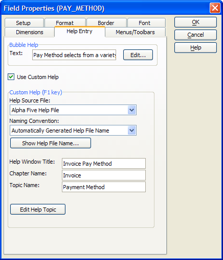
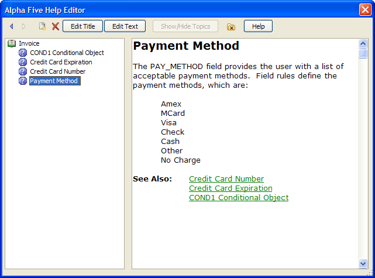
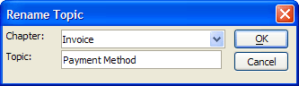
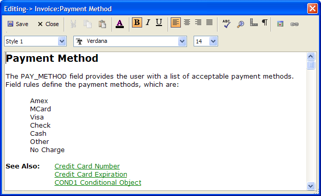
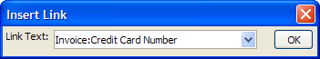

Creating Alpha Anywhere Help Text - AlphaSports
Alpha Anywhere supports three types of help systems:
Standard Windows help files in the .HLP format
Compiled Windows help files in the .CHM format
Native Alpha Anywhere help files
The Alpha Anywhere help system has the virtue of being available at no extra cost. While Alpha Anywhere help files do not support as many features as the other formats, they do support:
Structured topics in the familiar book-chapter-topic format.
Navigation to the previous and next topic within chapters.
Hyperlinks to other topics.
Rich text format with multiple fonts, sizes, and colors.
Procedure: Creating an Alpha Anywhere Help File
The following procedure assumes that the developer has opened the form in the Form Editor and has created all the reference scripts. Follow these instructions to create an Alpha Anywhere Help file.
Right click the form and select Properties....
Check Use Custom Help.
To associate a new topic with this form:
Enter the title of the topic's window in the Help Window Title field.
Enter the name of the group of topics in the Chapter Name field.
Enter the name of the topic in the Topic Name field.
To edit an existing topic or input a new topic, click Edit Help Topic.

 Note : You may only
enter the help editor from a form that contains a topic.
Note : You may only
enter the help editor from a form that contains a topic.
The following window shows the Alpha Anywhere Help Editor with a group of help topics.

Click the New
 button to create a new help topic.
button to create a new help topic.Click the Delete
 button to delete a help topic.
button to delete a help topic.Click Edit Title to display the Rename Topic dialog box and change the topic or chapter names.

Click Edit Text to display the topic editor.
Input and format your topic text. Click Save and Close to return to the Help Editor.

To create a hyperlink, place the cursor in the body of the topic and click the hyperlink button.
Select an existing topic and click OK.

 Note: The default name
for the Alpha Anywhere help text file is a_yourdatabasename_help.dbf.
Note: The default name
for the Alpha Anywhere help text file is a_yourdatabasename_help.dbf.
See Also
Linking to a External Help File Topic